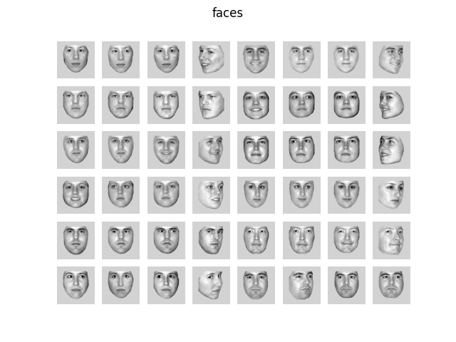
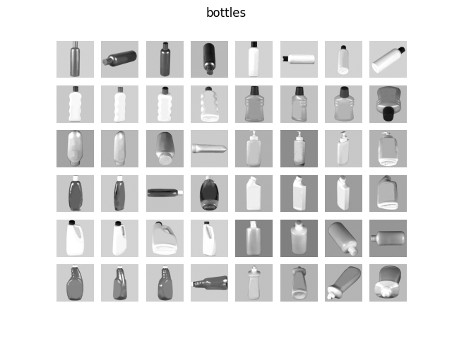
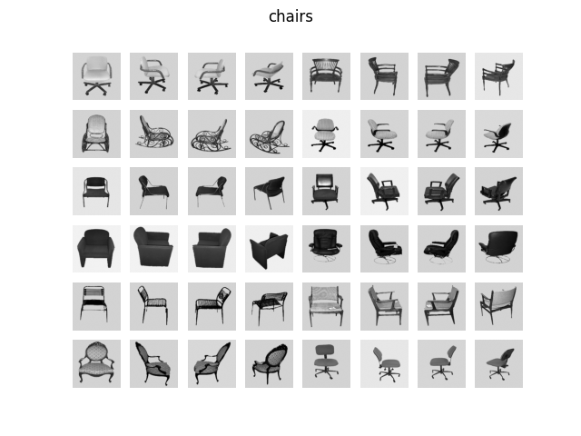

Note
Click here to download the full example code or to run this example in your browser via Binder
9.3.1. Show stimuli of Haxby et al. dataset¶
In this script we plot an overview of the stimuli used in “Distributed and Overlapping Representations of Faces and Objects in Ventral Temporal Cortex” (Science 2001)
- 
- 
- 

import matplotlib.pyplot as plt
from nilearn import datasets
from nilearn.plotting import show
haxby_dataset = datasets.fetch_haxby(subjects=[], fetch_stimuli=True)
stimulus_information = haxby_dataset.stimuli
for stim_type in stimulus_information:
# skip control images, there are too many
if stim_type != 'controls':
file_names = stimulus_information[stim_type]
fig, axes = plt.subplots(6, 8)
fig.suptitle(stim_type)
for img_path, ax in zip(file_names, axes.ravel()):
ax.imshow(plt.imread(img_path), cmap=plt.cm.gray)
for ax in axes.ravel():
ax.axis("off")
show()
Total running time of the script: ( 0 minutes 6.615 seconds)
Estimated memory usage: 55 MB